Mini Mentoria de Performance Hoteleira · Raio-X da Hospedagem
Descubra o que pode estar impedindo sua hospedagem de crescer. Faça seu diagnóstico e receba um plano de ação personalizado.
R$ 47 · pagamento único · para Airbnb, casas, apartamentos, pousadas e glampings
Você se identifica?
Você investiu em uma hospedagem, mas as reservas, a diária ou a margem não correspondem às expectativas.
Calendário com buracos. Você não sabe se o problema é o anúncio, o preço, a experiência ou a operação.
Faturamento que não vira lucro. Entra dinheiro, mas sobra pouco, e você não tem a conta de custos e equilíbrio.
Decisões no escuro. Sem dados organizados, é difícil saber o que corrigir primeiro.
O Raio-X organiza o que você já sabe, mostra o que falta saber e transforma isso em ações.
Veja como funciona
Demonstração real da plataforma, com um exemplo identificado como fictício. Não é depoimento nem resultado de cliente.
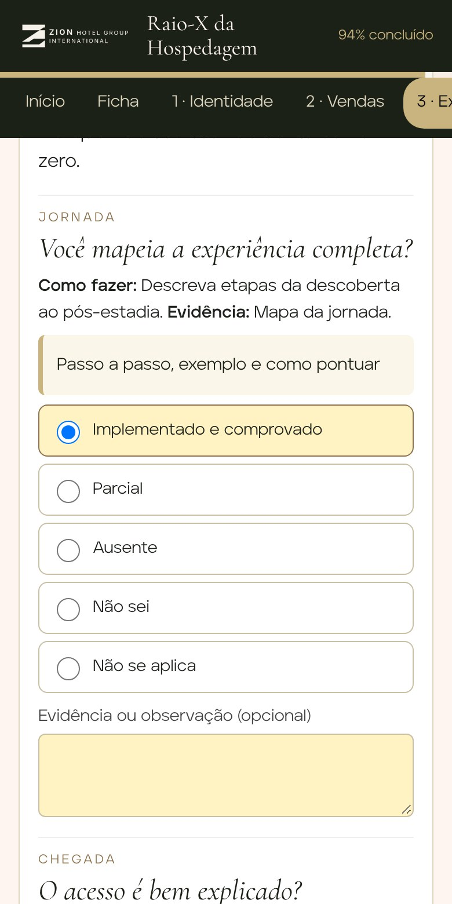
Tela real
Formulário do módulo
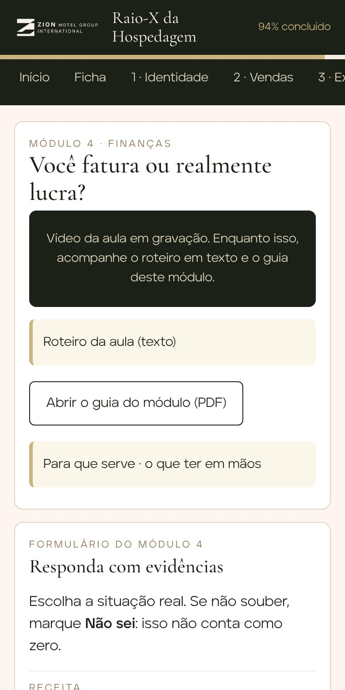
Tela real
Calculadora
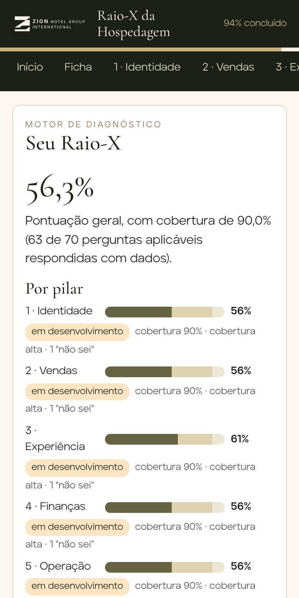
Tela real
Diagnóstico por pilar
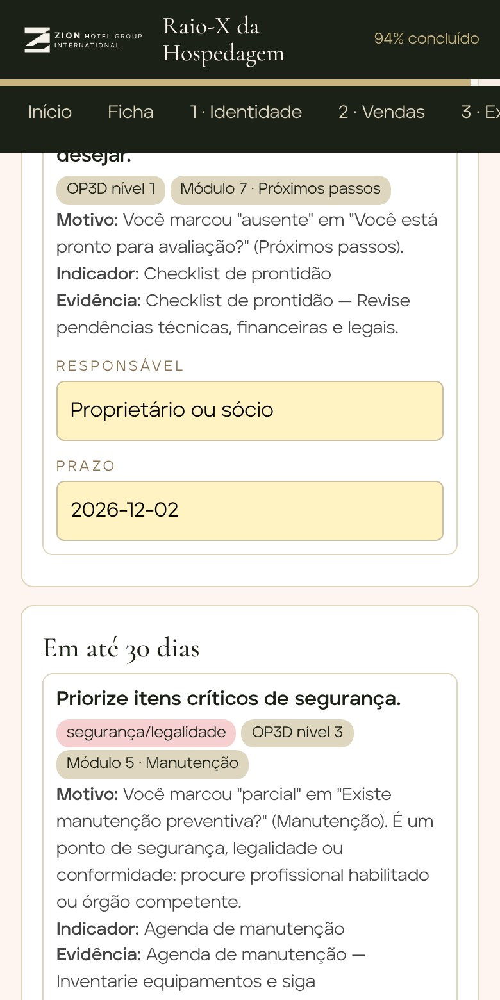
Tela real
Plano de ação
O que está incluído
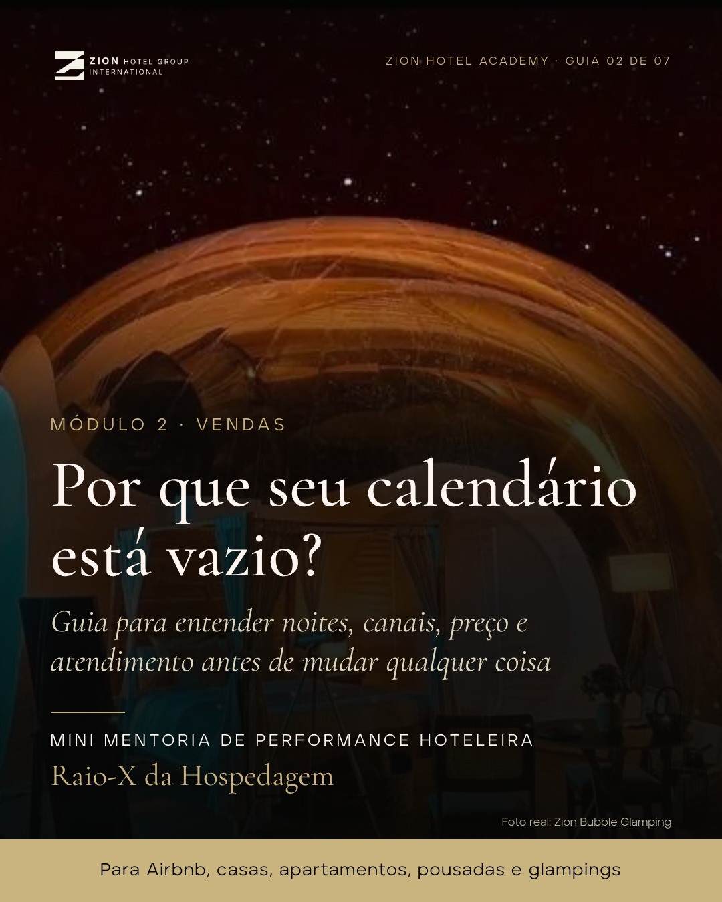
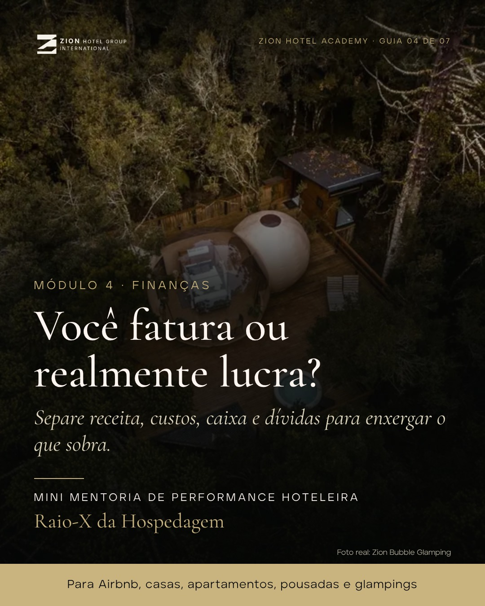
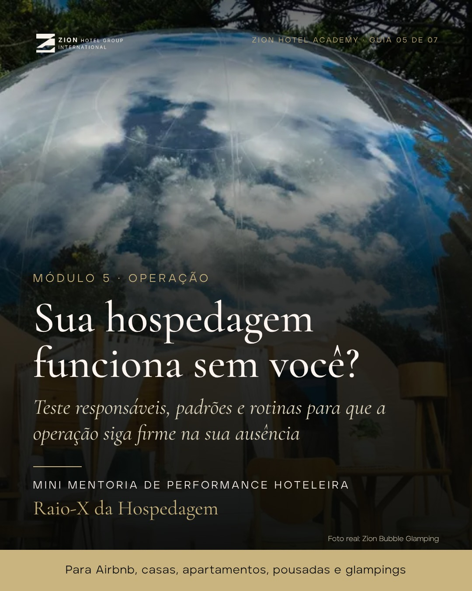
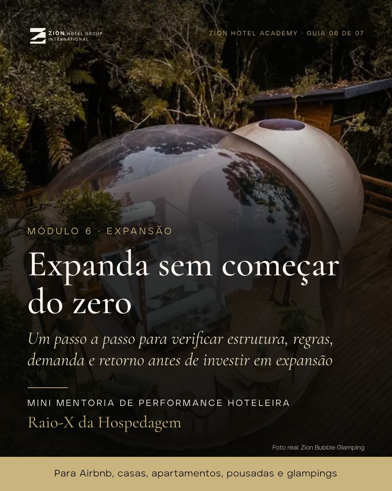
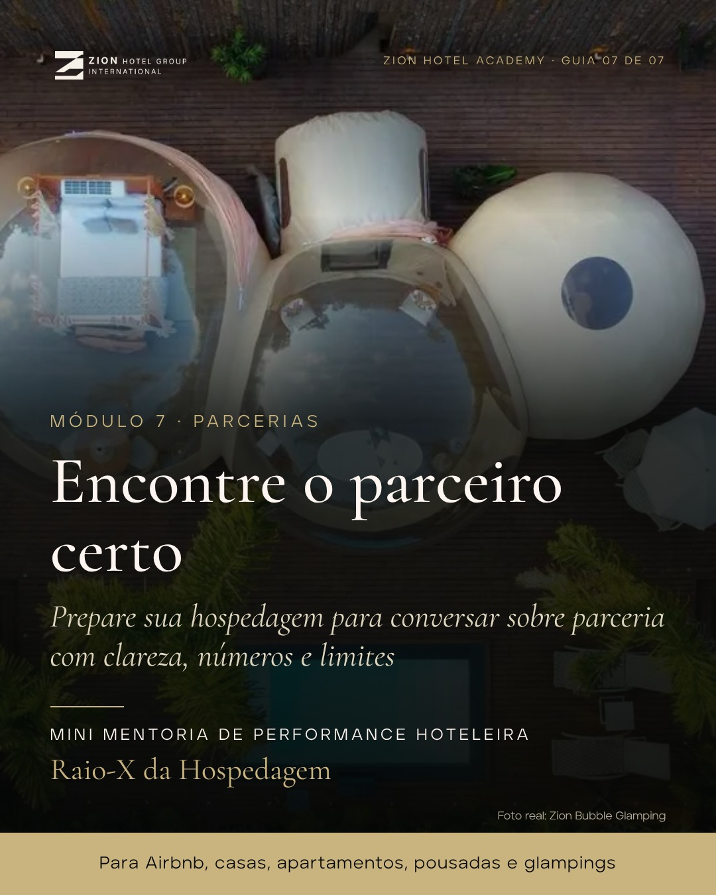
Capas com fotos reais da Zion Bubble Glamping. O método vale para qualquer tipo de hospedagem.
Identificação, dados declarados, cálculos, cobertura, pontos fortes, lacunas, plano 7/30/60/90 dias, hipóteses e limitações.
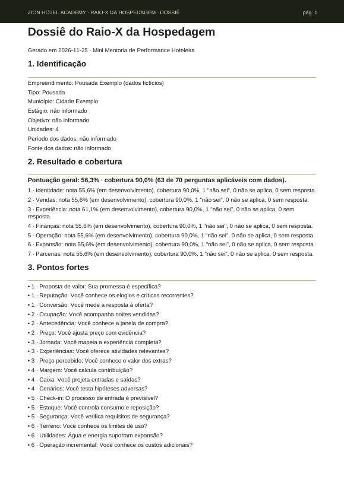
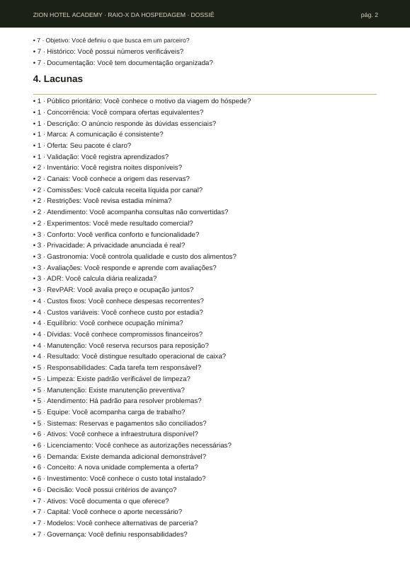
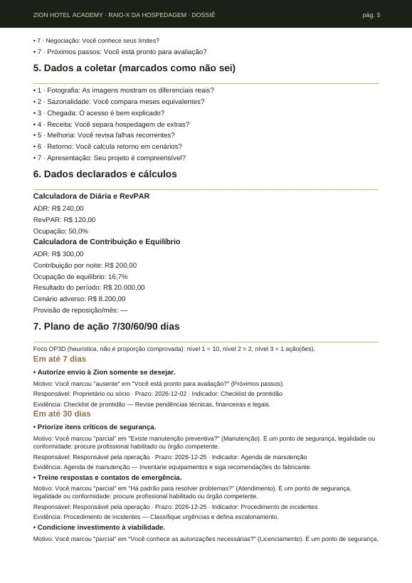
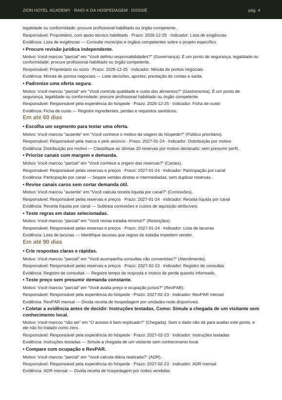
Dossiê de exemplo, gerado com dados fictícios.
QUERO FAZER MEU DIAGNÓSTICO · R$ 47Como o diagnóstico funciona
A nota de cada pilar considera só as respostas com dados. “Não sei” e “não se aplica” não pontuam: aparecem como cobertura e como ações para coletar a informação.
O plano começa pelo que envolve segurança e legalidade e depois prioriza impacto e esforço. É uma orientação educacional e pode ser ajustada por você.
Queremos conhecer seu empreendimento
Depois de gerar o dossiê, você pode, se quiser, autorizar o envio à Zion para avaliarmos possíveis soluções e parcerias. É opcional e nada é enviado automaticamente. Não há garantia de investimento.
De onde vem o método
Foto real da Zion Bubble Glamping, de onde vem a rotina que inspira o método.
A Zion opera a Zion Bubble Glamping em Urubici e em Florianópolis. O Raio-X parte dessa rotina de operar hospedagem.
Mini Mentoria de Performance Hoteleira
O valor corresponde ao acesso ao conteúdo digital. O diagnóstico é uma orientação baseada nos dados que você informar: não garante reservas, ocupação, renda, investimento nem parceria. Parcerias sujeitas à análise da Zion.
Perguntas frequentes